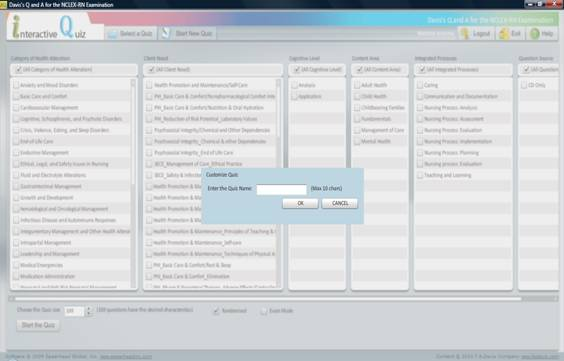

Start New Quiz Page
Selecting Start New Quiz will allow you to customize a quiz based on a number of criteria. Several categories and their sub-categories will be listed. You can select any of the options by clicking the check box next to the option. Multiple options can be selected in each category and you can select options from multiple categories. If you wish to clear one of your selections, click the checkbox again to "uncheck" it. Based on the criteria you select, the number of questions matching that criteria will be indicated.
You can then select the size of the quiz you wish to take. You will be notified if you select more questions than that exist in the matching criterion.
In addition to the number of questions and the criteria, you can select to take a quiz in either Exam Mode or the default Quiz Mode. You can choose to enter Exam Mode by clicking the checkbox next to Exam Mode. In Exam Mode you will not be able to view feedback for questions until after you have graded the quiz.
The quiz will automatically randomize the order of the questions. If you wish to view the questions in their original order, "uncheck" the box next to Randomized by clicking it.
After you have finished customizing the quiz, click the Start the Quiz button to begin. You will be prompted for a name for the quiz. This name will be used to continue the quiz at a later time or to view your grade report after you have completed the quiz. After you have entered a name, click OK to begin the quiz.
